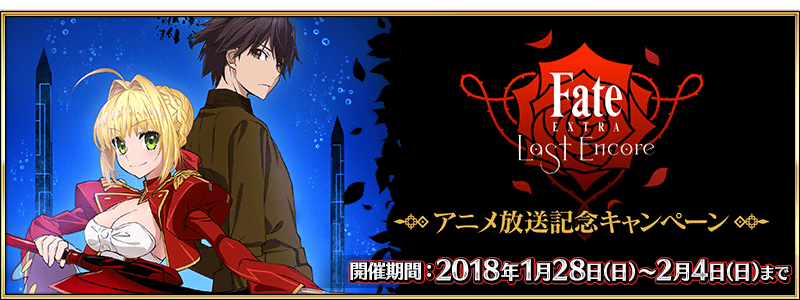
為了記念自2018年1月27日(六) 23:00開始放送的「Fate/EXTRA Last Encore」，實施「Fate/EXTRA Last Encor動畫放送記念宣傳活動」！
◆舉辦期間◆
2018年1月27日(六) 23:00～2月4日(日) 22:59
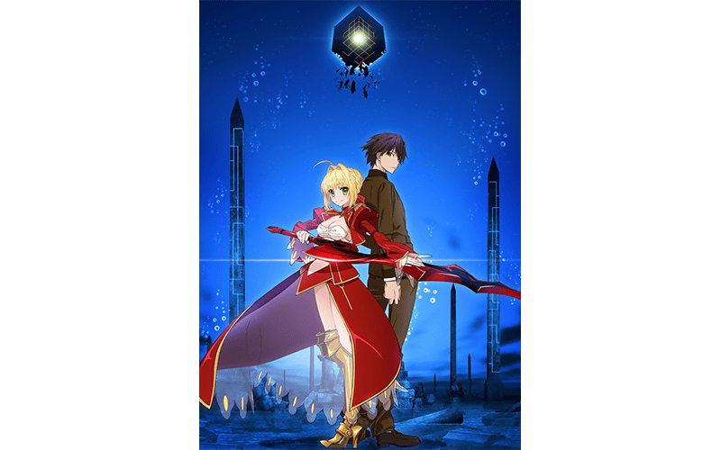
Fate/EXTRA Last Encore
官方網站:http://fate-extra-lastencore.com/
在下述的期間中登入的話，贈送合計聖晶石7個和呼符1張！
|
◆舉辦期間◆ ◆贈送對象◆
※請注意放送記念連續登入獎勵的領取必須在2月3日(六) 22:59前通過「特異點F 炎上汙染都市 冬木」。 |
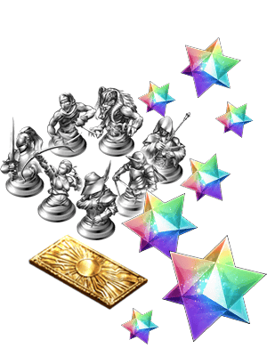 |
| 連續登入天數 | 贈送內容 | |
|---|---|---|
| 第1天 | 聖晶石 1個 Saber銀像 1個 |
|
| 第2天 | 聖晶石 1個 Archer銀像 1個 |
|
| 第3天 | 聖晶石 1個 Lancer銀像 1個 |
|
| 第4天 | 聖晶石 1個 Rider銀像 1個 |
|
| 第5天 | 聖晶石 1個 Caster銀像 1個 |
|
| 第6天 | 聖晶石 1個 Assassin銀像 1個 |
|
| 第7天 | 聖晶石 1個 Berserker銀像 1個 |
|
| 第8天 | 呼符 1張 | |
※第1天的登入獎勵會從1月28日(日) AM3:00配發。
※之後的登入獎勵會在每天AM3:00配發。
※連續登入天數中斷的話，無法領取之後的禮物。
※最多能領取8次，但根據開始遊戲的時間點，可能無法到此上限。
在迦勒底之門，通過下述的期間中出現的「Fate/EXTRA Last Encore」動畫放送記念關卡，得到關卡限定的概念禮裝吧！
※請注意「Fate/EXTRA Last Encore」動畫放送記念關卡並無冒險部份。
◆舉辦期間◆
2018年1月27日(六) 23:00～2月4日(日) 22:59
◆關卡開放條件◆
通過「特異點F 炎上汙染都市 冬木」的Master對象
◆「Fate/EXTRA Last Encore」動畫放送記念關卡限定概念禮裝◆
| 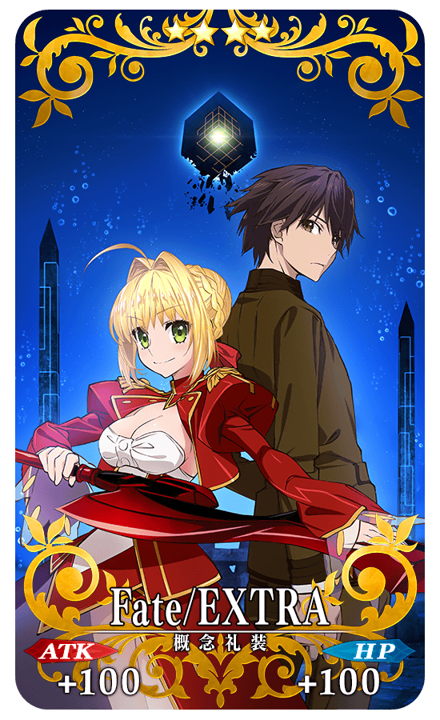 |
★★★★SR |
|
下述的期間中，在關卡開始時的支援選擇畫面，選擇其他Master的對象Servant做支援情況、其他Master選擇自己的對象Servant做支援情況的友情點數獲得量變成2倍。 ◆舉辦期間◆ |
 |
◆對象Servant◆
| 職階 | 稀有度 | Servant名 |
|---|---|---|
| Saber | ★★★★ | 高文 |
| ★★★★ | 尼祿・克勞狄烏斯 | |
| Archer | ★★★ | 羅賓漢 |
| Lancer | ★★★★ | 李書文 |
| Rider | ★★★★★ | 弗朗西斯・德雷克 |
| Caster | ★★★★ | 童謠 |
※請注意NPC Servant即使是對象Servant也在友情點數獲得量2倍的對象外。
下述的期間中，於「Fate/EXTRA Last Encore」活躍的Servant對象，幕間物語及強化關卡的AP消耗量變成1/2。
※請注意曜日關卡為對象外。
◆舉辦期間◆
2018年1月27日(六) 23:00～2月4日(日) 22:59
◆對象Servant◆
| 職階 | 稀有度 | Servant名 |
|---|---|---|
| Saber | ★★★★ | 高文 |
| ★★★★ | 尼祿・克勞狄烏斯 | |
| Archer | ★★★ | 羅賓漢 |
| Lancer | ★★★★ | 李書文 |
| Rider | ★★★★★ | 弗朗西斯・德雷克 |
| Caster | ★★★★ | 童謠 |
※強化關卡的AP消耗量1/2的對象，有開放強化關卡只有羅賓漢。
在達文西工房的「稀有稜鏡交換」追加下述的新道具。
通過AnimeJapan 2016 EXTRA合作關卡的話可獲得概念禮裝「Last Encore」。
◆新道具◆
Last Encore獲得關卡開放權
◆追加時間◆
2018年1月27日(六) 23:00～
在AnimeJapan 2016 EXTRA合作關卡有冒險部份。
無論如何請盡情享受於「Fate/EXTRA Last Encore」活躍「尼祿・克勞狄烏斯」登場的故事。
| 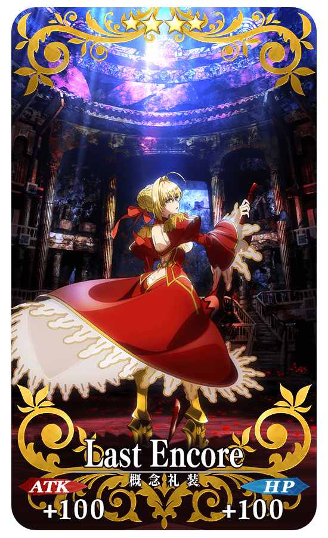 |
★★★★SR |
| 追加道具 | 能交換 次數 |
必需的 稀有稜鏡數 |
|---|---|---|
| Last Encore獲得關卡 | 1次 | 3個 |
※追加到「稀有稜鏡交換」的Last Encore獲得關卡為常駐，並無交換期限。
※關於已持有「★4(SR)Last Encore」的玩家，剩餘次數的顯示會是「0次」，無法交換。
※在通過關卡入手的「★4(SR)Last Encore」會是最大等級。
◆「Fate/EXTRA Last Encore動畫放送記念Pick Up召喚(每日交替)」期間◆
期間:2018年1月27日(六) 23:00～2月11日(日) 22:59
舉辦期間限定「Fate/EXTRA Last Encore動畫放送記念Pick Up召喚(每日交替)」！
「★4(SR)高文」「★4(SR)尼祿・克勞狄烏斯(Saber)」「★4(SR)李書文」「★4(SR)童謠」以每日交替Pick Up「★5(SSR)弗朗西斯・德雷克」「★3(R)羅賓漢」常駐Pick Up。
※弗朗西斯・德雷克、高文、尼祿・克勞狄烏斯(Saber)、李書文、童謠、羅賓漢在Pick Up期間結束後也會在故事召喚被抽出。
※Pick Up期間中，尼祿・克勞狄烏斯(Saber)就算是第二特異點通過前也會被抽出。
※Pick Up期間中，李書文就算是第五特異點通過前也會被抽出。
※Pick Up期間中，高文就算是第六特異點通過前也會被抽出。
詳情請在聖晶石召喚畫面左下的召喚詳細確認。
另外，與Pick Up Servant有關的概念禮裝「★5(SSR)パイレーツ・パーティー！」「★5(SSR)誉れを此処に」「★5(SSR)バトル・オリンピア」「★5(SSR)サマー・リトル」「★5(SSR)ナイツ・オブ・マリーンズ」「★5(SSR)アズ・ユー・ウィッシュ」「★4(SR)月下の四匹」「★3(R)ネヴァーランド」也以期間限定登場！
※パイレーツ・パーティー！、誉れを此処に、バトル・オリンピア、サマー・リトル、ナイツ・オブ・マリーンズ、アズ・ユー・ウィッシュ、月下の四匹、ネヴァーランド在Pick Up期間結束後不會追加到故事召喚。
※「★3(R)ネヴァーランド」在Pick Up期間中，也能在友情點數召喚獲得。
Pick Up期間中，Pick Up Servant、期間限定概念禮裝的出現機率提升！
10次召喚中確定1張★4(SR)以上和確定1位★3(R)以上的Servant！
※確定★4(SR)以上包含Servant和概念禮裝。
※所謂「出現機率提升」意指比同稀有度的Servant及概念禮裝出現機率更高的設定。
| 每日交替Pick Up期間 | 每日交替Pick Up內容 |
|---|---|
| 1月27日(六) 23:00～1月28日(日) 22:59 | 高文 尼祿・克勞狄烏斯(Saber) 李書文 童謠 |
| 1月28日(日) 23:00～1月29日(一) 22:59 | 尼祿・克勞狄烏斯(Saber) |
| 1月29日(一) 23:00～1月30日(二) 22:59 | 高文 |
| 1月30日(二) 23:00～1月31日(三) 22:59 | 童謠 |
| 1月31日(三) 23:00～2月1日(四) 22:59 | 李書文 |
| 2月1日(四) 23:00～2月2日(五) 22:59 | 高文 尼祿・克勞狄烏斯(Saber) 李書文 童謠 |
| 2月2日(五) 23:00～ 2月4日(日) 22:59 |
尼祿・克勞狄烏斯(Saber) |
| 2月4日(日) 23:00～ 2月6日(二) 22:59 |
高文 |
| 2月6日(二) 23:00～ 2月8日(四) 22:59 |
童謠 |
| 2月8日(四) 23:00～ 2月10日(六) 22:59 |
李書文 |
| 2月10日(六) 23:00～2月11日(日) 22:59 | 高文 尼祿・克勞狄烏斯(Saber) 李書文 童謠 |
※請注意會以每日交替變更Pick Up的Servant。
介紹弗朗西斯・德雷克的寶具演出！
在「Fate/Grand Order」官方網站內的公告中，公開了「★5(SSR)弗朗西斯・德雷克」的寶具演出。敬請確認。
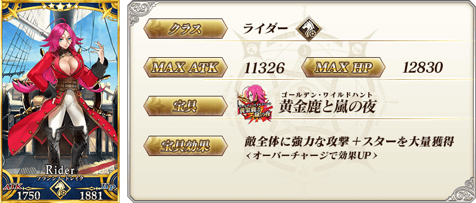

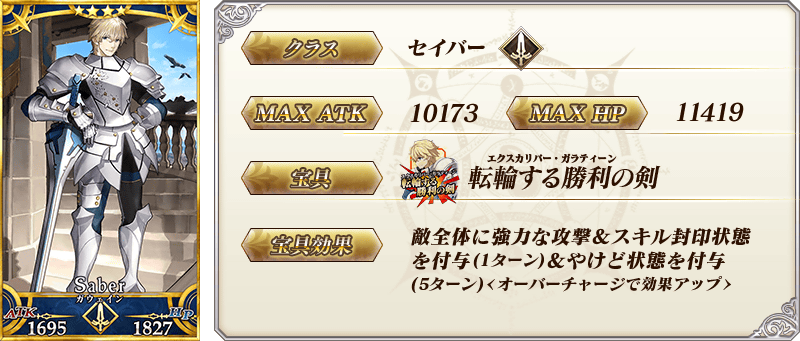

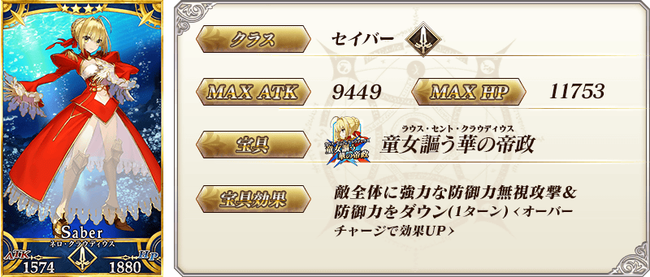


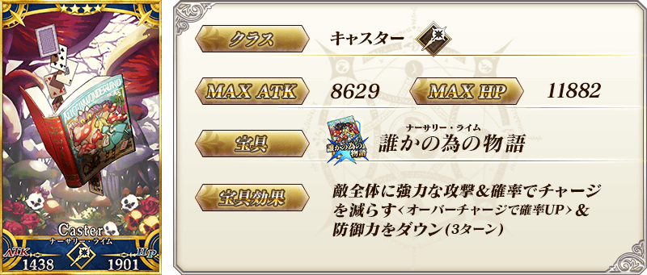

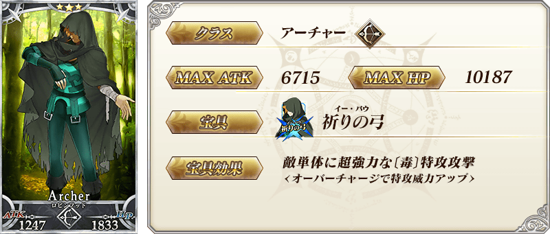
| 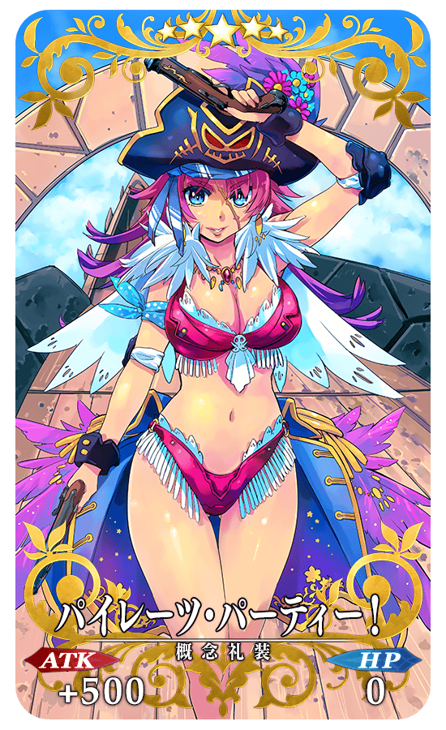 |
★★★★★SSR |
|
★★★★★SSR |
| 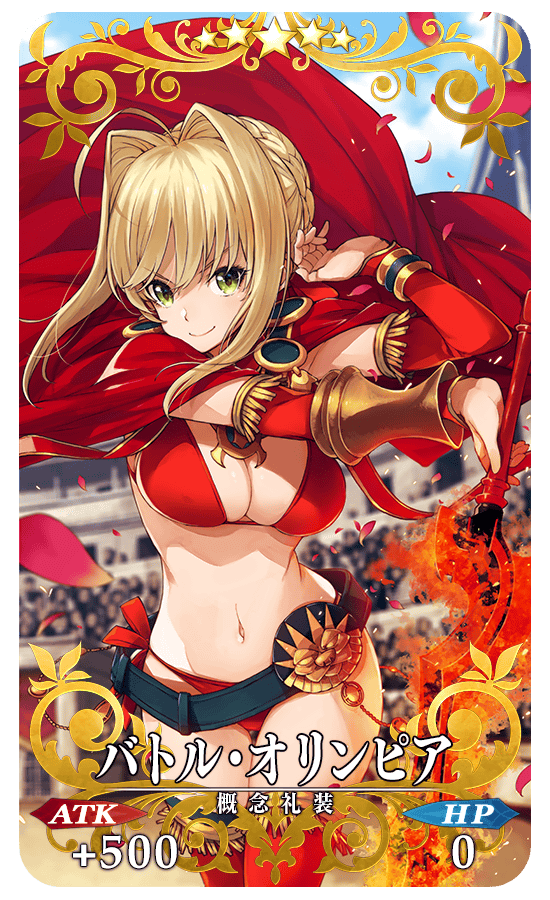 |
★★★★★SSR |
| 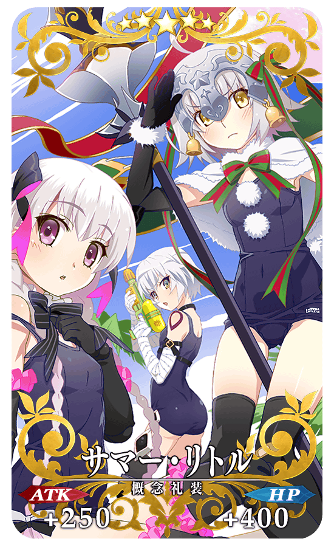 |
★★★★★SSR |
| 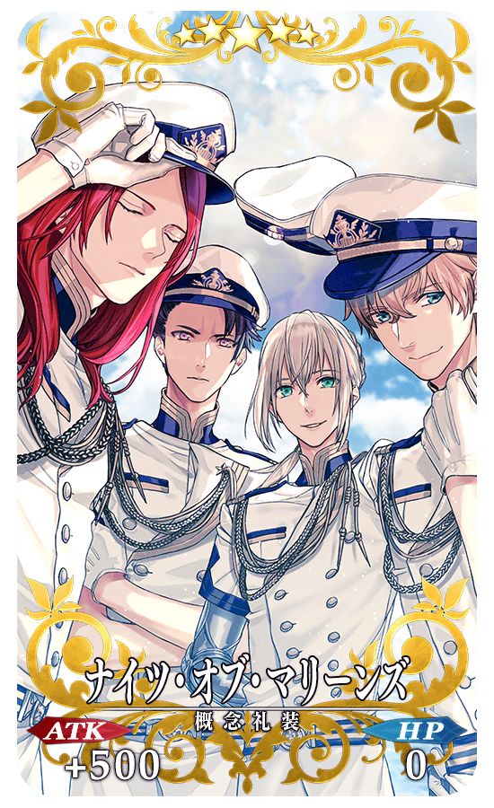 |
★★★★★SSR |
| 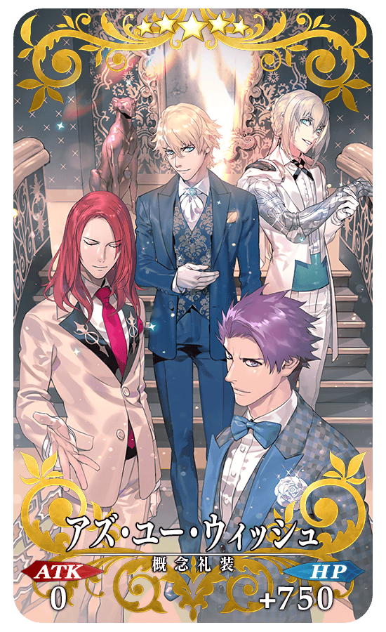 |
★★★★★SSR |
| 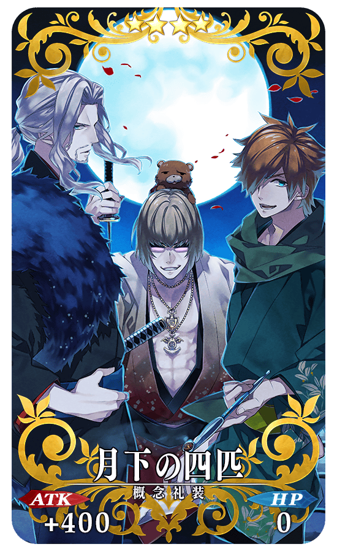 |
★★★★SR |
| 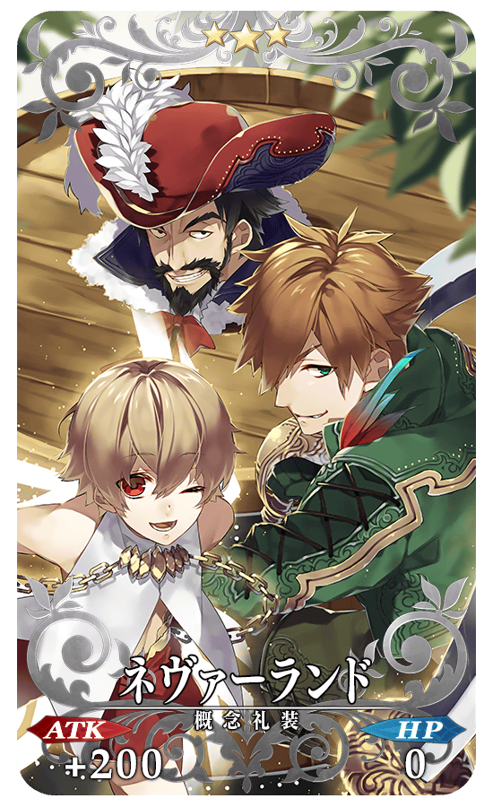 |
★★★R |
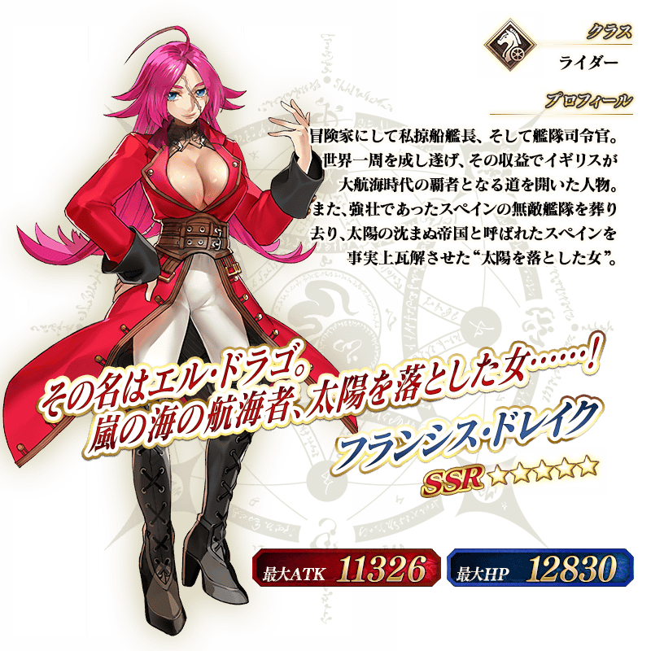